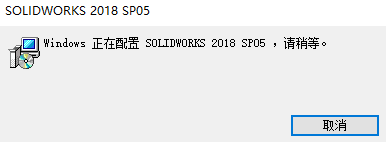

正在配置solidworks
打开SW程序，弹窗：Window:正在配置S0LIIORKS 20xx SP05，清稍等
方法1：修改快捷方式
1、首先选择SOLIDWORKS的快捷方式鼠标右键选择属性可以看到SOLIDWORKS的安装目录。
2、进入SOLIDWORKS的安装目录，查找到sldProcMon.exe这个文件，将其删除。
3、找到SLDWORKS.exe选中它然后鼠标右键选择“发送到”-“桌面快捷方式”并删除原有的快捷方式图标。
4、点击新的SOLIDWORKS快捷方式重新启动。
原因
情况1修改硬盘卷盘符
在已经安装SW的电脑上，修改硬盘卷盘符时（例如：原本SW程序所在的D盘被修改成E盘），会因为当前位置和注册表SW安装信息IM的位置不一致，导致启动SW后会在原来D盘，重新配置安装，出现问题弹窗。
情况2只对当前安装的产品有效
出现在多版本使用时的问题，当我的启动操作使用了旧版本（卸载）的程序启动时，则会提示我们，当前“这个操作只对当前安装的产品有效”。
方法：右键SW文件，选择打开方式，修改设置默认打开方式。（注意，这里需要去浏览到对应的版本文件夹下，的swShellFileLauncher.exe文件进行打开）